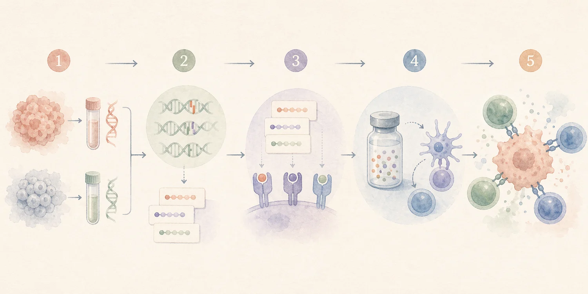

Vorasidenib
The targeted-therapy lane is built around the tumor's defining IDH1 R132C mutation. Vorasidenib is the ongoing IDH inhibitor anchor in the story, with liver-function monitoring and a temporary hold/resume along the way.
This is the guided exhibit: what the tumor is, what changed genetically, why IDH biology matters, how the personalized vaccine fits in, and where the evidence is strong versus still exploratory.
The most interesting part of the story is not just that I tried a targeted drug or a vaccine. It is that the strategy combines two different ways of pressuring the tumor: suppress the mutant IDH program while teaching the immune system to recognize tumor-specific peptide signals.
The targeted-therapy lane is built around the tumor's defining IDH1 R132C mutation. Vorasidenib is the ongoing IDH inhibitor anchor in the story, with liver-function monitoring and a temporary hold/resume along the way.
The immune lane is patient-individual immune training using mutation-spanning peptides. The aim is not a generic immune boost; it is a personalized attempt to show T cells what my tumor looks like.
This is the molecular record behind the story: tumor identity, variant evidence, neoantigen funnel, therapy signal, and the limits the run called out.
My vaccine story starts with my tumor data. Tumor-specific mutations become peptide candidates, and peptide candidates become patient-individual immune-training material.

Find mutations that are present in the cancer and different from normal tissue.
Prioritize mutation-spanning peptides that could be shown by my HLA molecules.
Use selected peptides as patient-specific immune-training material.
The goal is for immune cells to recognize those tumor-specific peptide signals.
Start with tumor sequencing and choose mutation-spanning peptides that are meant to look different from normal self.
CeGAT's vaccine lane is personalized rather than off-the-shelf: the input is my tumor's molecular profile.
The point is to teach T cells a patient-specific picture of my tumor, using peptides selected from the tumor's own mutation profile.
Click a finding to see the actual molecular pieces in this story: drivers, HLA context, vaccine peptide candidates, biomarkers, and run limits. This is a public explainer layer, not a substitute for the source reports.
The first downloadable layer is a clean public summary. Raw genome, tumor VCF, and peptide-level files should be shared deliberately, with privacy boundaries and version notes.
The public-facing summary: a right frontal lobe diffuse astrocytoma with IDH-mutant phenotype documented, gross total resection in September 2023, and stable surveillance imaging through March 2026.
p.R132C. A defining mutation for the tumor identity and the reason IDH inhibitors enter the treatment story.
ATRX alteration or loss of expression is part of the astrocytoma-supportive molecular pattern.
TP53 appears in tumor records, with a germline-vs-somatic discrepancy that deserves a careful dedicated explainer.
MGMT promoter methylation is reported.
This splits the story into inherited context, tumor-only changes, and biomarker evidence. Click a tile to see the plain-English version of what changed and why it matters.